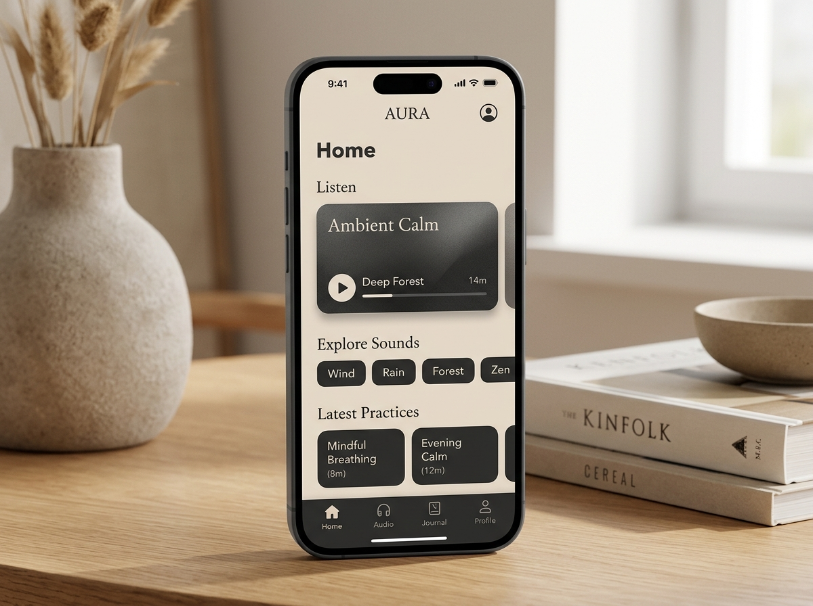
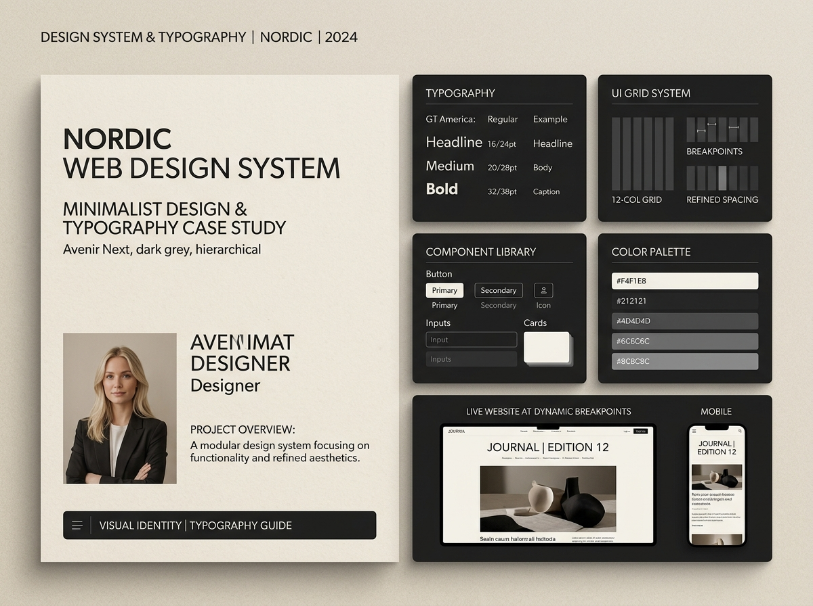
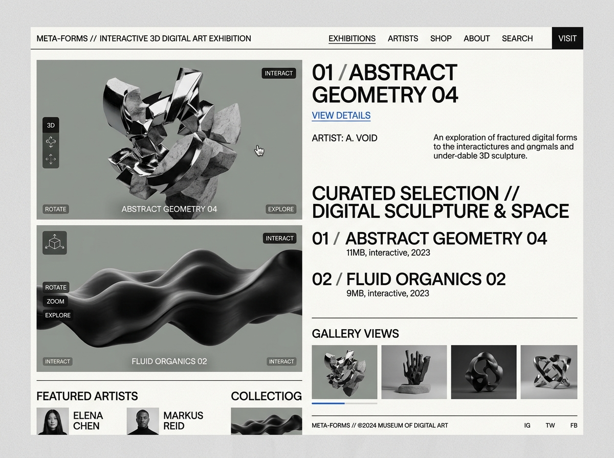

AURA — 極簡沉浸式身心音律與專注冥想 App
為忙碌現代人設計的情緒沉靜與聲景體驗應用。透過降低資訊視覺干擾、溫潤的雜誌感自然色盤以及溫暖的微震動回饋，顯著提升使用者的持續練習率達 42%。
身為熱愛介面美學與認知心理學的數位媒體設計新鮮人，我專注於將複雜的使用者痛點轉化為直覺、流暢且具高質感的數位產品介面。擅長從用戶訪談、設計系統建構至微互動原型製作，致力於以兼具美感與邏輯的解決方案創造商業價值。
設計師的使命不僅是讓介面好看，更是成為工程實踐與人類心理之間的最佳轉譯者。以使用者為核心的研究，賦予產品堅實的靈魂；以精雕細琢的微動態，為每一次點擊帶來喜悅。
跳脫主觀猜測，透過深入訪談、易用性測試 (Usability Testing) 與旅程地圖，精確發掘潛在障礙，定義具商業突破點的真實痛點。
建立高重用性、可擴展的 Figma Design System 與 Design Tokens，兼顧視覺一致性與工程端交付 (Handoff) 效率。
熟悉 HTML5、CSS3 與前端互動邏輯，能以工程師同理的語言探討動效邊界與技術可行性，讓卓越設計精準落實。
以全流程產品思維為骨架，融合前瞻美感與工程可行性，構築完整的設計落地能力。
主持超過 25+ 場受訪者深度測試，制定量化 SUS 與質化親和圖
熟稔 Auto Layout, Variables, Component Properties 與 Token 規範
從低保真 User Flow 迅速迭代至高保真可互動展示原型
梳理複雜產品功能層級，確保導航邏輯直觀清晰
嚴謹的基線網格 (Baseline Grid)、層級對比與節奏呼吸感
精準控制貝茲曲線與動態時長 (Easing & Timing)，產出 Lottie 檔
材質打光、基礎幾何建模，無縫嵌入現代 Web 介面
深淺色自適應色盤配置，對比度全面達標 AAA/AA 規範
CSS Grid, Flexbox, 自定義變數系統與流暢動效處理
獨立撰寫頁面微互動、滾動事件、主題切換與表單邏輯
理解分支管理、Pull Request 與開發者 Handoff 規範
高效生成 Moodboard、概念視覺與高擬真原型素材
點擊任一專案即可查看完整案例剖析（包含背景挑戰、使用者洞察、原型迭代與最終成效）。

為忙碌現代人設計的情緒沉靜與聲景體驗應用。透過降低資訊視覺干擾、溫潤的雜誌感自然色盤以及溫暖的微震動回饋，顯著提升使用者的持續練習率達 42%。

專為內容型媒體與高端電商打造的模組化設計系統。涵蓋 50+ 響應式元件、多階層 Design Tokens、深淺色自適應色階，大幅縮短團隊原型迭代時間 55%。

探索 3D 空間雕塑在 Web 瀏覽器中的感官邊界。融合野獸派版面排版、動態空間旋轉與無縫聲音切換，榮獲校際數位創作展年度最佳視覺設計獎。
結合理論基礎與實務淬鍊，累積跨專案的敏捷協作與設計交付經驗。
參與 B2B SaaS 企業數據儀表板與行動應用的介面重構；主導 3 次大型顧客易用性測試，提出 15 項高優先級改善建議並獲工程團隊 100% 採納；協助維護全產品線的 Figma 元件庫。
帶領 4 人跨領域團隊（設計、程式、行銷），從 0 到 1 打造結合日常療癒與自然環境聲響的互動 App《AURA》；負責產品定位、使用者研究、線框圖、高保真原型與動態展示設計，獲得設計學院專題評選「特優第一名」。
主修數位介面設計、資訊架構、認知心理學與互動程式設計；連續三學期獲得書卷獎；擔任系學會視覺設計部長，策辦全系年度數位創作展覽。
無論是全職職缺、實習機會、專案外包或單純交流設計心得，都非常歡迎隨時聯繫！
UI/UX Designer • Digital Product Explorer
留下您的訊息或職缺機會，系統將即時通知並在 24 小時內回覆。